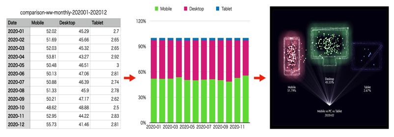

p5.jsとProcessing
p5.jsはJavaScriptのライブラリで、 インタラクティブなモーショングラフィックスを、簡単に書いてWebブラウザ上で実行することができます。キャンバス上に筆で絵を描くように、プログラムコードで図形や画像を描き、それを動かすことができます。デザイナーやアーティストが簡単にプログラミングできるように開発されたProcessingの機能をベースに開発されており、Processingの関数をJavaScirptとして提供しています。
データの視覚化
ビッグデータが溢れる現在、それを読み解き、問題解決に役立てることは大切です。高等学校や大学では、データサイエンスを学ぶためのカリキュラム作りが進められています。プログラムを使って、データをいつもとは違う視点で「見られる，触れるもの」とできたら、つまり「データの視覚化」を行えたら、データの価値や意味を新しく見出したり、高めたりできるでしょう。「データ視覚化」には、大きく3つの段階があるでしょう。
- [Step1] 表……文字や数値の列
表はそのようなデータの第1段階の視覚化です。 - [Step2] グラフ
次に表をグラフとして表すことで、より見やすくデータを捉えられる表現になります。しかし、ここまではデータをあるがままにシンプルに表現したに過ぎません。 - [Step3] インフォグラフィックスとしての表現
インフォグラフィックスとは情報をデザインして独自のやり方で見せたり，動きやインタラクションを組み込んだものです。情報の意味をインパクトのある形で伝え、それを見たり触った人がそのデータを「新しく感じる」のが第３段階になります。

p5.jsライブラリとデータ視覚化を手助けするライブラリを使うことで、第３段階の表現を実現します。